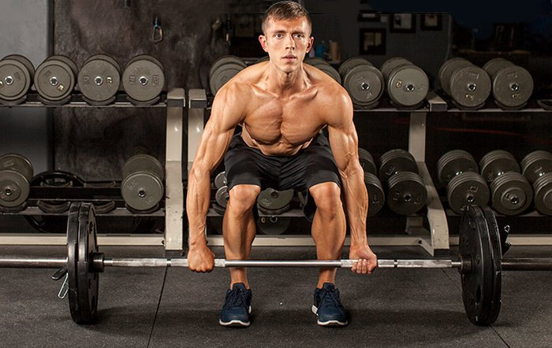

نکاتی که افراد لاغر در ورزش و عضله سازی باید رعایت کنند
از وقتی که یادم میآید دوست داشتم و تلاش میکردم که در ورزش و و عضله سازی موفق باشم و بدنی عضلانیتر داشته باشم؛
شش روز در هفته باشگاه میرفتم، مرتب شیک پروتئین مصرف میکردم و روتین بدنسازیام را مو به مو دنبال میکردم، خلاصه
هر کاری میکردم تا کمی بزرگتر شوم! اما اشتباهاتی داشتم که باعث شدند سالها خسته و آشفته و دلزده باشم و هیچ
نتیجهای هم نگیرم. طی دو سه سال گذشته، بعد از یک دهه تلاش، رمز موفقیت در عضله سازی را کشف کردم! در حال حاضر طبق
استانداردهای خیلی از افراد، تنومند و عضلانی نیستم اما در مقایسه با آنچه قبلا بودم، الان برای خودم هالک شدهام!
اگر شمایی که این مطلب را میخوانید فرد لاغری هستید که از تلاش و تمرین خسته شدهاید و دوست دارید وقتی جلوی آینه
قرار میگیرید احساس بهتری نسبت به خودتان داشته باشید پس ادامهی مطلب را حتما بخوانید. من سالها تلاش کردن تا
عضلانی شوم و میتوانم به جرات بگویم شش سال اول تلاشم را اشتباه تمرین کردم و اشتباه تغذیه کردم، زیرا استراتژی
درستی برای نتیجه گرفتن نداشتم.
هیچ چیزی بدتر از این نیست که شش ماه در باشگاه وقت صرف کنی و کاری را بکنی که فکر میکنی «باید» بکنی و با رفتن روی
ترازو بفهمی هیچ پیشرفتی نکردهای! اشتباهات زیر را مثل من مرتکب نشوید تا تلاشتان به ثمر بنشیند.
به اندازهی کافی غذا بخورید
اگر بدنتان تغییری نمیکند پس یعنی به اندازهی کافی نمیخورید. این اشتباه را تقریبا 95 درصد از افراد لاغری که
دوست دارند عضلانیتر شوند مرتکب میشوند. وقتی تمرینات بدنسازی را شروع کردم، 5 تا 6 روز در هفته باشگاه میرفتم و
برنامهی تمرینی بدنسازی داشتم. در پایان شش سال ِ بعد، به طول کلی فقط دو کلیوگرم اضافه کرده بودم، با وجود اینکه
احساس میکردم خیلی میخورم. بعدا معلوم شد هر روز500 تا 1000 کالری کمتر از آنچه برای ورزش و عضله سازی نیاز داشتم
میخوردهام.
بعد از شش سال تلاش، تازه فهمیدم باید تمریناتم را سادهتر کنم و مقدار کالری دریافتی روزانهام را دو برابر کنم. با
این روش توانستم در عرض سی روز، تقریبا شش کیلو و نیم اضافه کنم. شاید به روشی تداوم پذیر وزن اضافه نکرده بودم اما
بعد از شش سال مبارزه، این تجربه باعث شد به ارتباط میان تغذیه و درشت اندامتر شدن پی ببرم. اگر کالری کافی دریافت
نکنید، عضله نمیسازید. به عبارتی دیگر از هنوز نتوانستهاید در ورزش و عضله سازی موفق شوید پس یعنی کالری کافی
نمیخورید. اگر سعی در افزایش وزن دارید این توصیه را به یاد داشته باشید: هر وقت تردید داشتید که بخورید یا نخورید،
بخورید!
اینکه چه باید بخورید بستگی به میزان لاغریتان دارد. اگر پروتئین کافی و کالری لازم را دریافت کنید، میتوانید هله
هوله هم بخورید «اما» توصیه میکنم به جای غذاهای بیکیفیت، روی غذاهای سالمتر و با کیفیتتر تمرکز کنید.
توقعات غیر واقعی از خودتان نداشته باشید
ما عادت کردهایم که فورا به نتیجه برسیم. همانطور که افراد در کاهش وزن، انتظارات غیر واقعی از خودشان دارند (طبق
تلقینهای بازار کاهش وزن و وعدههای دروغی!)، خیلیها در مورد عضله سازی نیز توقعات غیر منطقی از خود دارند.
تبلیغاتی که میبینید، برای فروش مکملها و محصولات است، نه برای زودتر عضلانی شدن بدن شما!
این اصل را فراموش نکنید: در شرایط بهینه شما میتوانید در بهترین حالت هر ماه، فقط یک تا دو پوند عضله بسازید (یا
کمتر). البته معنیاش این نیست که نمیتوانید قدرت زیادی کسب کنید، بلکه رشد تودهی عضلانیتان بیش از این نخواهد
بود. پس، طبق هفته یا ماه، برای خود هدفهای بزرگ تعیین نکنید. روی چند ماه یا چند سالتان برنامه ریزی کنید. ورزش و
عضله سازی چیزی نیست که چند روزه یا چند هفتهای ساخته شود. برای عضله سازی به زمان و صبر نیاز دارید.
یک برنامهی اصولی را دنبال کنید
شما به برنامه «نیاز دارید». برنامهای که متعادل باشد و شامل حرکات مهم و اصولی جهت ورزش و عضله سازی در تمام
بدنتان بشود. اگر بدون برنامه به باشگاه بروید، وارد جنگ با خود خواهید شد. بهتر است یک برنامهی پایهای مشخص کنید
و ماهها به آن پایبند بمانید، نه اینکه هر هفته برنامه عوض کنید و هر بار به دنبال جدیدترین و مُد روزترین
برنامهها باشید.
هدفتان را روی این بگذارید که در تمرینات اسکوات، دد لیفت، پرس بالای سر، پارویی، بارفیکس و دیپها مهارت پیدا کنید
و با آنها قویتر شوید، و به اندازهی کافی بخورید. اگر هنوز برای تمرین با باربل آماده نیستید، با تمرینات وزن بدن
شروع کنید. اگر هنوز دقیقا نمیدانید چه برنامهای برایتان مناسب است، فعلا فقط شروع کنید، و تا چند ماه پشت سر هم
آن را دنبال کنید، تمرکزتان روی تبحر بیشتر پیدا کردن در هر حرکت باشد.
به اندازهی که لازم است تمرین کنید
تمرینات شما باید کافی باشند تا عضلاتتان رشد کنند. شما نیاز دارید وزنههای سنگینتری بزنید، یا تکرارهای بیشتری
داشته باشید تا بدنتان به چالش کشیده شود، فیبرهای عضلانیتان تخریب شود و بدنتان وادار شود دوباره قویتر خودش را
بسازد. شما با تمرینات با وزن بدن هم میتوانید عضلانی شوید اما باید مدام آنها را سختتر کنید تا عضلات وادار به
رشد شوند.
مدام بارفیکس و اسکوات با وزن بدن انجام دادن، راه خوبی برای شروع است اما بعد از مدتی، اگر چالش را افزایش ندهید،
عضلاتتان دیگر رشد نخواهند کرد. وقتی توانستید بیش از 10 تا 15 تکرار در یک تمرین را در یک ست انجام دهید، باید
چالش را بالا ببرید. شما به یک برنامهی درست نیاز دارید تا به شما این امکان را بدهد عضلات خود را بیشتر و بیشتر
فعال کنید.

زیاد به خودتان فشار نیاورید تا آسیب نبینید
به دلیل همان عادت به فورا نتیجه گرفتن که گفتیم، همیشه بیشتر و بیشتر نیز میخواهیم! فورا و بدون فکر و آمادگی، شدت
تمرین را بالا بردن باعث میشود آسیب ببینید و مجبور شوید دورهای را به استراحت بپردازید تا ریکاوری شوید. شاید حتی
به نقطهی اول برگرید و مجبور شوید از ابتدا شروع کنید.
پس، صبور باشید و با وزنهای کم شروع کنید، تدریجا میبینید که هر روز، کمی بهتر و بهتر خواهید شد. زمانی که مقاومت
را بالاتر میبرید باید دقتتان نیز بیشتر شود. ضمنا باید بدانید چه زمانی وقت افزایش چالش است. ورزش برای سالمتر و
قویتر کردن شماست، نه برای نابود کردنتان!
شیوهی تمرینی تداوم پذیری داشته باشید
درست مثل کسی که هر روز ساعتها روی تردمیل میدود و به خودش گرسنگی میدهد به امید اینکه وزن کم کند. چند روز
میتواند ادامه دهد؟ اگر هم وزن کم کند، به محض اینکه به روال عادیاش برگردد، وزن از دست رفتهاش نیز برخواهد گشت!
تنوع در تغذیه، خوب و کافی خوابیدن و چهار روز در هفته و هر بار تقریبا یک ساعت تمرین و ورزش کردن، قابل تداومتر
است تا به خود گرسنگی دادن و هر روز باشگاه رفتن.
تمرینتان را با دو روز در هفته شروع کنید و تمرکز بیشترتان را روی بیشتر خوردن و بیشتر خوابیدن بگذارید. اگر هر روز
تمرین کنید و خوب هم بخورید و هیچ کار دیگری هم نکنید، شاید در عرض کمتر از شش ماه بدنتان عضلانی شود اما ممکن است
بعد از این مدت، دوباره به وضعیت قبل برگردید. پس بهتر است عجله نکنید و مدت بیشتری منتظر بمانید تا نتیجهای که
میگیرید نیز ماندگارتر شود.
وزن اضافه کردن و عضلانیتر شدن برایتان الویت داشته باشد
شاید به اندازهی کافی جدی و مصمم نیستید. اگر افزایش وزن و رشد بیشتر عضلات، هدف اصلیتان نباشد، خیلی از عادتهای بدتان را نمیتوانید ترک کنید، نمیتوانید عادتهای سالم و لازم ایجاد کنید و به دنبال راههایی برای بالا بردن سطح آگاهیتان در جهت هدفی که دارید نیستید. با خودتان روراست باشید: آیا واقعا وزن و عضله اضافه کردن برایتان یک الویت است؟ اگر نباشد، به زودی تلاشتان را رها خواهید کرد و خسته خواهید شد و شاید اصلا دیگر دلتان نخواهد ورزش کنید!
سرگرم جزئیات نشوید
کاری به سایر افراد در باشگاه نداشته باشید. چرا فکر میکنید شما هم باید همان کاری را بکنید که ورزشکار کناریتان
میکند؟ این سوالها را رها کنید که آیا باید پرس سینه را روی سطح شیبدار انجام دهم یا سطح صاف؟ آیا باید 6 ست با 8
تکرار داشته باشم یا 5 ست با 5 تکرار؟ همهی اینها را فراموش کنید!
اگر میخواهید بزرگ و عضلانی شوید، تمرکزتان را روی قویتر شدن در یکی از چند حرکت بزرگ و پایهای بگذارید. هر وقت
به یک پایه ریزی محکم رسیدید میتوانید سراغ تمرینات تک عضلهای بروید. تمرینات پایهای شامل اسکوات، دد لیفت، پرس
نیمکت، پارویی با باربل، بارفیکس و دیپ (با وزنه) میشود. با این تمرینات، تمام عضلات شما به میزان زیادی فعال
میشوند، پس نگران تک عضلاتتان نباشید.
برای موفقیت در ورزش و عضله سازی ریکاوری کافی داشته باشید
خیلیها به خود میبالند که لازم نیست زیاد بخوابند. اگر میخواهید قویتر و عضلانیتر شوید واقعا به خواب کافی نیاز دارید. وقتی تمرین بدنسازی انجام میدهید، عضلات شما تخریب میشوند و نیاز دارند طی 24 تا 48 ساعت بعدی، بازسازی شوند. خواب، بخش مهمی از این پروسه است. بدون خواب کافی بدن شما نمیتواند ریکاوری شود و نمیتوانید رشد کنید.